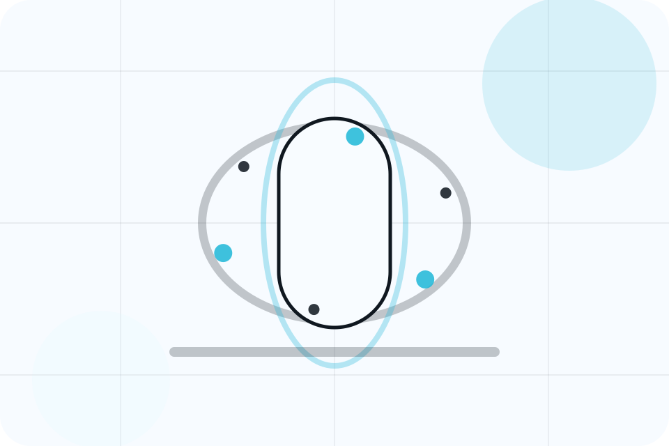
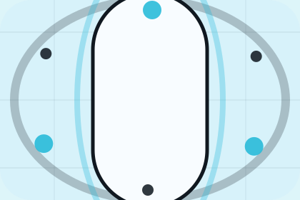

Start
How visitors begin this route and what detail is useful at the first step.
Journey / 01
Journey opens as a clear healthcare decision hub: what Aster offers, who it helps, why it matters, and which route to take first.
The first screen combines positioning, proof, primary action, and fast internal navigation, so people can act immediately or compare the rest of the journey route with context.
Body scan split hero
Select the closest route and Aster keeps the next step, proof, and follow-up expectation aligned with fear reduction and care confidence.

Journey / 02
Booking explains the operating sequence so visitors can see how the first request becomes a clear recommendation and follow-up.
The steps are written from the visitor side: what they do first, what Aster clarifies, what they receive, and how support continues.
Book AppointmentAster structures booking around start, clarify, and a clear next route so visitors can compare the block quickly before they book an appointment.
Book AppointmentBody scan split hero
Select the closest route and Aster keeps the next step, proof, and follow-up expectation aligned with fear reduction and care confidence.
Journey / 03
Intake explains the operating sequence so visitors can see how the first request becomes a clear recommendation and follow-up.
The steps are written from the visitor side: what they do first, what Aster clarifies, what they receive, and how support continues.
Explore JourneyHow visitors begin this route and what detail is useful at the first step.
What Aster reviews, filters, or explains before recommending the next move.
What the visitor receives afterward, including support, proof, or a handoff to the next page.
Journey / 04
Consultation explains the operating sequence so visitors can see how the first request becomes a clear recommendation and follow-up.
The steps are written from the visitor side: what they do first, what Aster clarifies, what they receive, and how support continues.
Book AppointmentHow visitors begin this route and what detail is useful at the first step.
Journey / 06
Planning explains the operating sequence so visitors can see how the first request becomes a clear recommendation and follow-up.
The steps are written from the visitor side: what they do first, what Aster clarifies, what they receive, and how support continues.
Explore JourneyHow visitors begin this route and what detail is useful at the first step.
What Aster reviews, filters, or explains before recommending the next move.
What the visitor receives afterward, including support, proof, or a handoff to the next page.
Journey / 07
Treatment explains the practical scope, best-fit situations, and expected outcome so healthcare visitors can compare options without decoding jargon.
The section keeps the offer concrete: what is included, who it is best for, what decision it supports, and which linked route gives the deeper detail.
Explore JourneyAster structures treatment around best fit, what changes, and a clear next route so visitors can compare the block quickly before they book an appointment.
Book AppointmentJourney / 09
Aftercare explains the operating sequence so visitors can see how the first request becomes a clear recommendation and follow-up.
The steps are written from the visitor side: what they do first, what Aster clarifies, what they receive, and how support continues.
Explore JourneyHow visitors begin this route and what detail is useful at the first step.
What Aster reviews, filters, or explains before recommending the next move.
What the visitor receives afterward, including support, proof, or a handoff to the next page.
Journey / 10
Aster closes the journey route with a clear action, a quick reminder of the value, and a low-friction way to book an appointment.
Visitors who are ready can use the primary action. Visitors who are still comparing can scan the section links, proof, and support routes before they book an appointment.
Book AppointmentThe final block keeps the choice simple: act now, compare one more proof route, or send enough detail for a focused response.
Book Appointmentfear reduction and care confidence
A scan-first care journey with minimalist copy, body-data panels, instant-results proof, and a direct appointment CTA. Journey ends with a direct path to book an appointment, plus enough context for visitors who still need to compare.

Book AppointmentInformation supports planning and is not a diagnosis or emergency instruction. People should use local emergency services for urgent symptoms.